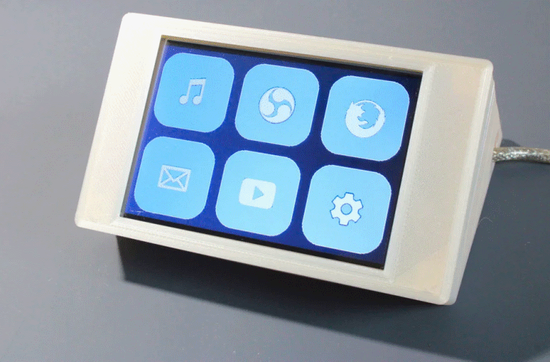

FreeTouchDeck

Features:
- ESP32 DevKitC (38pin)
- ili9488 TFT SPI 4-WIRE
- xpt2046 resistive touch controller
This board is created for the FreeTouchDeck project and the PCB-combiner board is open source. Due to the extensive documentation it was easy to port openHASP to the FreeTouchDeck.
| Pros | Cons |
|---|---|
| 480x320 display | 4 MB flash |
| Price | No PSram |
| Resistive touch |
Video~
3D Printed Cases~
You can find a 3D printable case on Thingiverse and Github.
Flashing~
The FreeTouchDeck can easily be flashed over USB like any ESP32 development board.
GPIO Settings~
These pins can be used freely as GPIOs:
PCB Blueprint~
The PCB Combiner is fully Open Source Hardware:
- Schematics
- PCB layout

HASP build_flags~
Specify the LCD Configuration to use and define the GPIOs in the environment build flags:
build_flags =
${env.build_flags}
${esp32.build_flags}
;region -- TFT_eSPI build options ------------------------
-D USER_SETUP_LOADED=1
-D ILI9488_DRIVER=1
-D TFT_ROTATION=0 ; 0=0, 1=90, 2=180 or 3=270 degree
-D TFT_WIDTH=320
-D TFT_HEIGHT=480
-D TFT_MISO=19 ;// (leave TFT SDO disconnected if other SPI devices share MISO)
-D TFT_MOSI=23
-D TFT_SCLK=18
-D TFT_CS=15 ;// Chip select control pin
-D TFT_DC=2 ;// Data Command control pin
-D TFT_RST=4 ;// Reset pin (could connect to RST pin)
-D TFT_BCKL=32 ;None, configurable via web UI (e.g. 2 for D4)
-D SUPPORT_TRANSACTIONS
-D TOUCH_CS=21
-D TOUCH_DRIVER=2046 ; XPT2606 Resistive touch panel driver
-D SPI_FREQUENCY=27000000
-D SPI_TOUCH_FREQUENCY=2500000
-D SPI_READ_FREQUENCY=20000000
;endregion